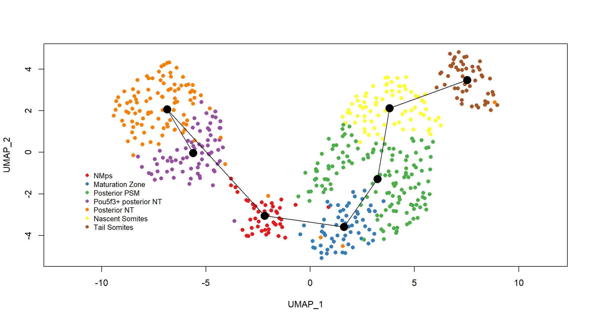
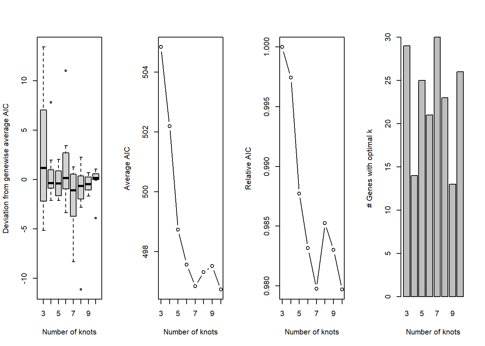

Chapter 8 Pseudotime
Our aim is to explore how the expression of marker genes change along the neural and mesodermal trajectories, with the neuromesodermal progenitors acting as the root of the bifurcation.
We will perform pseudotime inference with the slingshot package to assign each cell a measure of biological progress along each trajectory. More precisely, for two cells A and B ordered along a trajectory, if cell B has a larger pseudotime value than cell A, then cell B is interpreted as exhibiting a gene expression profile of a more differentiated cell relative to cell A.
Subsequently, we use the tradeseq package to analyse the change in gene expression along the neural and mesodermal lineage trajectories.
8.1 Importing libraries
8.2 Importing data
#Convert to SCE object
TB_sce <- as.SingleCellExperiment(x = TBcells,
assay = "SCT")
table(colData(TB_sce)$subclusters_names)##
## Maturation zone Nascent somites NMps
## 62 76 47
## Posterior NT Posterior PSM Pou5f3+ Posterior NT
## 103 140 73
## Tail somites
## 50Q1 How would you subset the data to contain only cells in the NMp, maturation zone, posterior PSM and pou5f3+ posterior NT clusters?
To run slingshot on our dataset, we need to provide it with the coordinates of the reduced dimension and the cluster labels. For comparison with our previous work, we will use the UMAP coordinates and the subcluster_names labels, which are both stored in the converted SingleCellExperiment object.
The slingshot wrapper function performs 2 necessary steps in this method of lineage inference. First, it constructs a cluster-based minimum spanning tree (MST) on the cells to obtain a global lineage structure using the getLineages function. This is followed by the fitting of principle curves for each lineage called with the getCurves function.
## Using full covariance matrixclusters <- ifelse(colData(TB_sce)$subclusters_names == "NMps", 1,
ifelse(colData(TB_sce)$subclusters_names == "Maturation zone",2, ifelse(colData(TB_sce)$subclusters_names == "Posterior PSM", 3,
ifelse(colData(TB_sce)$subclusters_names == "Pou5f3+ Posterior NT", 4,ifelse(colData(TB_sce)$subclusters_names == "Posterior NT", 5,ifelse(colData(TB_sce)$subclusters_names == "Nascent somites", 6,ifelse(colData(TB_sce)$subclusters_names == "Tail somites", 7, NA)))))))
clust_col = data.frame(names = colData(TB_sce)$subclusters_names, clusters = clusters, colors = brewer.pal(9,"Set1")[clusters]) %>% arrange(clusters) %>% distinct()
plot(reducedDims(sce_sling)$UMAP, col = brewer.pal(9,"Set1")[clusters], pch=16, asp = 1)
lines(SlingshotDataSet(sce_sling), lwd=1, type = "lineages", col='black')
legend(-11, -0.7, legend=c("NMps", "Maturation Zone", "Posterior PSM", "Pou5f3+ posterior NT", "Posterior NT", "Nascent Somites", "Tail Somites"), col=clust_col$colors, pch = 16, pt.cex = 0.8, cex = 0.8, bty='n', box.lty=0)
8.3 TradeSeq workflow analyses
set.seed(5)
icMat <- evaluateK(counts = counts, sds = SlingshotDataSet(sce_sling), k = 3:10,
nGenes = 200, verbose = T)
## [1] 2000 551## [1] 2000 551sce <- readRDS("rds/6_slingshot.rds")
assoRes <- associationTest(sce) %>%
tibble::rownames_to_column() %>%
dplyr::filter(pvalue < 1e-10)
asso_genes <- assoRes$rowname # Clustering expression patterns
nPointsClus <- 20
#clusterExperiment::listBuiltInFunctions()
clustPat <- clusterExpressionPatterns(sce, nPoints = nPointsClus,
genes = asso_genes)## 36 parameter combinations, 36 use sequential method, 36 use subsampling method
## Running Clustering on Parameter Combinations...
## done.clustPat <- readRDS(file = "rds/6_clusterExperiment.rds")
clusterLabels <- primaryCluster(clustPat$rsec)
#clustPat
genesWithinClust <- rownames(clustPat$yhatScaled[clusterLabels == 2, ])
(genesWithinClust)[5]## [1] "tbx6"cUniq <- unique(clusterLabels)
cUniq <- cUniq[!cUniq == -1] # remove unclustered genes
cUniq <- sort(cUniq)
plots <- list()
for (xx in cUniq[1:10]) {
cId <- which(clusterLabels == xx)
p <- ggplot(data = data.frame(x = 1:nPointsClus,
y = rep(range(clustPat$yhatScaled[cId, ]),
nPointsClus / 2)),
aes(x = x, y = y)) +
geom_point(alpha = 0) +
labs(title = paste0("Cluster ", xx), x = "Pseudotime", y = "Normalized expression") +
theme_classic()
for (ii in 1:length(cId)) {
geneId <- rownames(clustPat$yhatScaled)[cId[ii]]
p <- p +
geom_line(data = data.frame(x = rep(1:nPointsClus, 2),
y = clustPat$yhatScaled[geneId, ],
lineage = rep(0:1, each = nPointsClus)),
aes(col = as.character(lineage), group = lineage), lwd = 1.5)
}
p <- p + guides(color = FALSE) +
scale_color_manual(values = c("orange", "darkseagreen3"),
breaks = c("0", "1"))
plots[[as.character(xx)]] <- p
}
plots$ncol <- 3
do.call(cowplot::plot_grid, plots)
8.4 Session Info
View Session Info
devtools::session_info()
## - Session info ---------------------------------------------------------------
## setting value
## version R version 4.0.0 (2020-04-24)
## os Windows 10 x64
## system x86_64, mingw32
## ui RTerm
## language (EN)
## collate English_United Kingdom.1252
## ctype English_United Kingdom.1252
## tz Asia/Kuala_Lumpur
## date 2020-06-03
##
## - Packages -------------------------------------------------------------------
## package * version date lib source
## ade4 1.7-15 2020-02-13 [1] CRAN (R 4.0.0)
## annotate 1.66.0 2020-04-27 [1] Bioconductor
## AnnotationDbi * 1.50.0 2020-04-27 [1] Bioconductor
## ape 5.3 2019-03-17 [1] CRAN (R 4.0.0)
## assertthat 0.2.1 2019-03-21 [1] CRAN (R 4.0.0)
## backports 1.1.6 2020-04-05 [1] CRAN (R 4.0.0)
## beeswarm 0.2.3 2016-04-25 [1] CRAN (R 4.0.0)
## bibtex 0.4.2.2 2020-01-02 [1] CRAN (R 4.0.0)
## Biobase * 2.48.0 2020-04-27 [1] Bioconductor
## BiocGenerics * 0.34.0 2020-04-27 [1] Bioconductor
## BiocNeighbors 1.6.0 2020-04-27 [1] Bioconductor
## BiocParallel 1.22.0 2020-04-27 [1] Bioconductor
## BiocSingular 1.4.0 2020-04-27 [1] Bioconductor
## bit 1.1-15.2 2020-02-10 [1] CRAN (R 4.0.0)
## bit64 0.9-7 2017-05-08 [1] CRAN (R 4.0.0)
## bitops 1.0-6 2013-08-17 [1] CRAN (R 4.0.0)
## blob 1.2.1 2020-01-20 [1] CRAN (R 4.0.0)
## bookdown 0.19 2020-05-15 [1] CRAN (R 4.0.0)
## broom 0.5.6 2020-04-20 [1] CRAN (R 4.0.0)
## callr 3.4.3 2020-03-28 [1] CRAN (R 4.0.0)
## cellranger 1.1.0 2016-07-27 [1] CRAN (R 4.0.0)
## cli 2.0.2 2020-02-28 [1] CRAN (R 4.0.0)
## cluster * 2.1.0 2019-06-19 [2] CRAN (R 4.0.0)
## clusterExperiment * 2.8.0 2020-04-27 [1] Bioconductor
## codetools 0.2-16 2018-12-24 [2] CRAN (R 4.0.0)
## colorspace 1.4-1 2019-03-18 [1] CRAN (R 4.0.0)
## combinat 0.0-8 2012-10-29 [1] CRAN (R 4.0.0)
## cowplot * 1.0.0 2019-07-11 [1] CRAN (R 4.0.0)
## crayon 1.3.4 2017-09-16 [1] CRAN (R 4.0.0)
## data.table 1.12.8 2019-12-09 [1] CRAN (R 4.0.0)
## DBI 1.1.0 2019-12-15 [1] CRAN (R 4.0.0)
## dbplyr 1.4.3 2020-04-19 [1] CRAN (R 4.0.0)
## DDRTree 0.1.5 2017-04-30 [1] CRAN (R 4.0.0)
## DelayedArray * 0.14.0 2020-04-27 [1] Bioconductor
## DelayedMatrixStats 1.10.0 2020-04-27 [1] Bioconductor
## densityClust 0.3 2017-10-24 [1] CRAN (R 4.0.0)
## desc 1.2.0 2018-05-01 [1] CRAN (R 4.0.0)
## devtools 2.3.0 2020-04-10 [1] CRAN (R 4.0.0)
## digest 0.6.25 2020-02-23 [1] CRAN (R 4.0.0)
## docopt 0.6.1 2018-10-11 [1] CRAN (R 4.0.0)
## doParallel 1.0.15 2019-08-02 [1] CRAN (R 4.0.0)
## dplyr * 0.8.5 2020-03-07 [1] CRAN (R 4.0.0)
## dqrng 0.2.1 2019-05-17 [1] CRAN (R 4.0.0)
## edgeR 3.30.0 2020-04-27 [1] Bioconductor
## ellipsis 0.3.0 2019-09-20 [1] CRAN (R 4.0.0)
## evaluate 0.14 2019-05-28 [1] CRAN (R 4.0.0)
## extrafont * 0.17 2014-12-08 [1] CRAN (R 4.0.0)
## extrafontdb 1.0 2012-06-11 [1] CRAN (R 4.0.0)
## fansi 0.4.1 2020-01-08 [1] CRAN (R 4.0.0)
## farver 2.0.3 2020-01-16 [1] CRAN (R 4.0.0)
## fastICA 1.2-2 2019-07-08 [1] CRAN (R 4.0.0)
## fitdistrplus 1.0-14 2019-01-23 [1] CRAN (R 4.0.0)
## FNN 1.1.3 2019-02-15 [1] CRAN (R 4.0.0)
## forcats * 0.5.0 2020-03-01 [1] CRAN (R 4.0.0)
## foreach 1.5.0 2020-03-30 [1] CRAN (R 4.0.0)
## fs 1.4.1 2020-04-04 [1] CRAN (R 4.0.0)
## future 1.17.0 2020-04-18 [1] CRAN (R 4.0.0)
## future.apply 1.5.0 2020-04-17 [1] CRAN (R 4.0.0)
## genefilter 1.70.0 2020-04-27 [1] Bioconductor
## generics 0.0.2 2018-11-29 [1] CRAN (R 4.0.0)
## GenomeInfoDb * 1.24.0 2020-04-27 [1] Bioconductor
## GenomeInfoDbData 1.2.3 2020-05-11 [1] Bioconductor
## GenomicRanges * 1.40.0 2020-04-27 [1] Bioconductor
## ggbeeswarm 0.6.0 2017-08-07 [1] CRAN (R 4.0.0)
## ggplot2 * 3.3.0 2020-03-05 [1] CRAN (R 4.0.0)
## ggrepel 0.8.2 2020-03-08 [1] CRAN (R 4.0.0)
## ggridges 0.5.2 2020-01-12 [1] CRAN (R 4.0.0)
## globals 0.12.5 2019-12-07 [1] CRAN (R 4.0.0)
## glue 1.4.0 2020-04-03 [1] CRAN (R 4.0.0)
## gridBase 0.4-7 2014-02-24 [1] CRAN (R 4.0.0)
## gridExtra * 2.3 2017-09-09 [1] CRAN (R 4.0.0)
## gtable 0.3.0 2019-03-25 [1] CRAN (R 4.0.0)
## gtools 3.8.2 2020-03-31 [1] CRAN (R 4.0.0)
## haven 2.2.0 2019-11-08 [1] CRAN (R 4.0.0)
## HDF5Array 1.16.0 2020-04-27 [1] Bioconductor
## highr 0.8 2019-03-20 [1] CRAN (R 4.0.0)
## hms 0.5.3 2020-01-08 [1] CRAN (R 4.0.0)
## howmany 0.3-1 2012-06-01 [1] CRAN (R 4.0.0)
## HSMMSingleCell 1.8.0 2020-05-07 [1] Bioconductor
## htmltools 0.4.0 2019-10-04 [1] CRAN (R 4.0.0)
## htmlwidgets 1.5.1 2019-10-08 [1] CRAN (R 4.0.0)
## httr 1.4.1 2019-08-05 [1] CRAN (R 4.0.0)
## ica 1.0-2 2018-05-24 [1] CRAN (R 4.0.0)
## igraph 1.2.5 2020-03-19 [1] CRAN (R 4.0.0)
## IRanges * 2.22.1 2020-04-28 [1] Bioconductor
## irlba 2.3.3 2019-02-05 [1] CRAN (R 4.0.0)
## iterators 1.0.12 2019-07-26 [1] CRAN (R 4.0.0)
## jsonlite 1.6.1 2020-02-02 [1] CRAN (R 4.0.0)
## kernlab 0.9-29 2019-11-12 [1] CRAN (R 4.0.0)
## KernSmooth 2.23-16 2019-10-15 [2] CRAN (R 4.0.0)
## knitr 1.28 2020-02-06 [1] CRAN (R 4.0.0)
## labeling 0.3 2014-08-23 [1] CRAN (R 4.0.0)
## lattice 0.20-41 2020-04-02 [2] CRAN (R 4.0.0)
## lazyeval 0.2.2 2019-03-15 [1] CRAN (R 4.0.0)
## leiden 0.3.3 2020-02-04 [1] CRAN (R 4.0.0)
## lifecycle 0.2.0 2020-03-06 [1] CRAN (R 4.0.0)
## limma 3.44.1 2020-04-28 [1] Bioconductor
## listenv 0.8.0 2019-12-05 [1] CRAN (R 4.0.0)
## lmtest 0.9-37 2019-04-30 [1] CRAN (R 4.0.0)
## locfdr 1.1-8 2015-07-15 [1] CRAN (R 4.0.0)
## locfit 1.5-9.4 2020-03-25 [1] CRAN (R 4.0.0)
## lsei 1.2-0.1 2020-05-06 [1] CRAN (R 4.0.0)
## lubridate 1.7.8 2020-04-06 [1] CRAN (R 4.0.0)
## magrittr 1.5 2014-11-22 [1] CRAN (R 4.0.0)
## MASS 7.3-51.5 2019-12-20 [2] CRAN (R 4.0.0)
## Matrix 1.2-18 2019-11-27 [2] CRAN (R 4.0.0)
## matrixStats * 0.56.0 2020-03-13 [1] CRAN (R 4.0.0)
## mclust * 5.4.6 2020-04-11 [1] CRAN (R 4.0.0)
## memoise 1.1.0 2017-04-21 [1] CRAN (R 4.0.0)
## mgcv 1.8-31 2019-11-09 [2] CRAN (R 4.0.0)
## modelr 0.1.7 2020-04-30 [1] CRAN (R 4.0.0)
## monocle 2.16.0 2020-04-27 [1] Bioconductor
## munsell 0.5.0 2018-06-12 [1] CRAN (R 4.0.0)
## nlme 3.1-147 2020-04-13 [2] CRAN (R 4.0.0)
## NMF * 0.22.0 2020-02-12 [1] CRAN (R 4.0.0)
## npsurv 0.4-0.1 2020-05-06 [1] CRAN (R 4.0.0)
## org.Dr.eg.db * 3.11.1 2020-05-11 [1] Bioconductor
## patchwork 1.0.0 2019-12-01 [1] CRAN (R 4.0.0)
## pbapply 1.4-2 2019-08-31 [1] CRAN (R 4.0.0)
## pheatmap * 1.0.12 2019-01-04 [1] CRAN (R 4.0.0)
## phylobase 0.8.10 2020-03-01 [1] CRAN (R 4.0.0)
## pillar 1.4.4 2020-05-05 [1] CRAN (R 4.0.0)
## pkgbuild 1.0.8 2020-05-07 [1] CRAN (R 4.0.0)
## pkgconfig 2.0.3 2019-09-22 [1] CRAN (R 4.0.0)
## pkgload 1.0.2 2018-10-29 [1] CRAN (R 4.0.0)
## pkgmaker * 0.31.1 2020-03-19 [1] CRAN (R 4.0.0)
## plotly 4.9.2.1 2020-04-04 [1] CRAN (R 4.0.0)
## plyr 1.8.6 2020-03-03 [1] CRAN (R 4.0.0)
## png 0.1-7 2013-12-03 [1] CRAN (R 4.0.0)
## prettyunits 1.1.1 2020-01-24 [1] CRAN (R 4.0.0)
## princurve * 2.1.4 2019-05-29 [1] CRAN (R 4.0.0)
## processx 3.4.2 2020-02-09 [1] CRAN (R 4.0.0)
## progress 1.2.2 2019-05-16 [1] CRAN (R 4.0.0)
## ps 1.3.3 2020-05-08 [1] CRAN (R 4.0.0)
## purrr * 0.3.4 2020-04-17 [1] CRAN (R 4.0.0)
## qlcMatrix 0.9.7 2018-04-20 [1] CRAN (R 4.0.0)
## R.methodsS3 * 1.8.0 2020-02-14 [1] CRAN (R 4.0.0)
## R.oo * 1.23.0 2019-11-03 [1] CRAN (R 4.0.0)
## R.utils * 2.9.2 2019-12-08 [1] CRAN (R 4.0.0)
## R6 2.4.1 2019-11-12 [1] CRAN (R 4.0.0)
## RANN 2.6.1 2019-01-08 [1] CRAN (R 4.0.0)
## rappdirs 0.3.1 2016-03-28 [1] CRAN (R 4.0.0)
## RColorBrewer * 1.1-2 2014-12-07 [1] CRAN (R 4.0.0)
## Rcpp 1.0.4.6 2020-04-09 [1] CRAN (R 4.0.0)
## RcppAnnoy 0.0.16 2020-03-08 [1] CRAN (R 4.0.0)
## RCurl 1.98-1.2 2020-04-18 [1] CRAN (R 4.0.0)
## readr * 1.3.1 2018-12-21 [1] CRAN (R 4.0.0)
## readxl 1.3.1 2019-03-13 [1] CRAN (R 4.0.0)
## registry * 0.5-1 2019-03-05 [1] CRAN (R 4.0.0)
## remotes 2.1.1 2020-02-15 [1] CRAN (R 4.0.0)
## reprex 0.3.0 2019-05-16 [1] CRAN (R 4.0.0)
## reshape2 1.4.4 2020-04-09 [1] CRAN (R 4.0.0)
## reticulate 1.15 2020-04-02 [1] CRAN (R 4.0.0)
## rhdf5 2.32.0 2020-04-27 [1] Bioconductor
## Rhdf5lib 1.10.0 2020-04-27 [1] Bioconductor
## rlang 0.4.6 2020-05-02 [1] CRAN (R 4.0.0)
## rmarkdown 2.1 2020-01-20 [1] CRAN (R 4.0.0)
## rncl 0.8.4 2020-02-10 [1] CRAN (R 4.0.0)
## RNeXML 2.4.4 2020-05-10 [1] CRAN (R 4.0.0)
## rngtools * 1.5 2020-01-23 [1] CRAN (R 4.0.0)
## ROCR 1.0-11 2020-05-02 [1] CRAN (R 4.0.0)
## rprojroot 1.3-2 2018-01-03 [1] CRAN (R 4.0.0)
## RSpectra 0.16-0 2019-12-01 [1] CRAN (R 4.0.0)
## RSQLite 2.2.0 2020-01-07 [1] CRAN (R 4.0.0)
## rstudioapi 0.11 2020-02-07 [1] CRAN (R 4.0.0)
## rsvd 1.0.3 2020-02-17 [1] CRAN (R 4.0.0)
## Rtsne 0.15 2018-11-10 [1] CRAN (R 4.0.0)
## Rttf2pt1 1.3.8 2020-01-10 [1] CRAN (R 4.0.0)
## rvest 0.3.5 2019-11-08 [1] CRAN (R 4.0.0)
## S4Vectors * 0.26.0 2020-04-27 [1] Bioconductor
## scales * 1.1.1 2020-05-11 [1] CRAN (R 4.0.0)
## scater * 1.16.0 2020-04-27 [1] Bioconductor
## scran * 1.16.0 2020-04-27 [1] Bioconductor
## sctransform 0.2.1 2019-12-17 [1] CRAN (R 4.0.0)
## sessioninfo 1.1.1 2018-11-05 [1] CRAN (R 4.0.0)
## Seurat * 3.1.5 2020-04-16 [1] CRAN (R 4.0.0)
## SingleCellExperiment * 1.10.1 2020-04-28 [1] Bioconductor
## slam 0.1-47 2019-12-21 [1] CRAN (R 4.0.0)
## slingshot * 1.6.0 2020-04-27 [1] Bioconductor
## softImpute 1.4 2015-04-08 [1] CRAN (R 4.0.0)
## sparsesvd 0.2 2019-07-15 [1] CRAN (R 4.0.0)
## statmod 1.4.34 2020-02-17 [1] CRAN (R 4.0.0)
## stringi 1.4.6 2020-02-17 [1] CRAN (R 4.0.0)
## stringr * 1.4.0 2019-02-10 [1] CRAN (R 4.0.0)
## SummarizedExperiment * 1.18.1 2020-04-30 [1] Bioconductor
## survival 3.1-12 2020-04-10 [2] CRAN (R 4.0.0)
## testthat 2.3.2 2020-03-02 [1] CRAN (R 4.0.0)
## tibble * 3.0.1 2020-04-20 [1] CRAN (R 4.0.0)
## tidyr * 1.0.3 2020-05-07 [1] CRAN (R 4.0.0)
## tidyselect 1.0.0 2020-01-27 [1] CRAN (R 4.0.0)
## tidyverse * 1.3.0 2019-11-21 [1] CRAN (R 4.0.0)
## tradeSeq * 1.2.0 2020-04-27 [1] Bioconductor
## tsne 0.1-3 2016-07-15 [1] CRAN (R 4.0.0)
## usethis 1.6.1 2020-04-29 [1] CRAN (R 4.0.0)
## utf8 1.1.4 2018-05-24 [1] CRAN (R 4.0.0)
## uuid 0.1-4 2020-02-26 [1] CRAN (R 4.0.0)
## uwot 0.1.8 2020-03-16 [1] CRAN (R 4.0.0)
## vctrs 0.2.4 2020-03-10 [1] CRAN (R 4.0.0)
## VGAM 1.1-3 2020-04-28 [1] CRAN (R 4.0.0)
## vipor 0.4.5 2017-03-22 [1] CRAN (R 4.0.0)
## viridis * 0.5.1 2018-03-29 [1] CRAN (R 4.0.0)
## viridisLite * 0.3.0 2018-02-01 [1] CRAN (R 4.0.0)
## withr 2.2.0 2020-04-20 [1] CRAN (R 4.0.0)
## xfun 0.13 2020-04-13 [1] CRAN (R 4.0.0)
## XML 3.99-0.3 2020-01-20 [1] CRAN (R 4.0.0)
## xml2 1.3.2 2020-04-23 [1] CRAN (R 4.0.0)
## xtable 1.8-4 2019-04-21 [1] CRAN (R 4.0.0)
## XVector 0.28.0 2020-04-27 [1] Bioconductor
## yaml 2.2.1 2020-02-01 [1] CRAN (R 4.0.0)
## zinbwave 1.10.0 2020-04-27 [1] Bioconductor
## zlibbioc 1.34.0 2020-04-27 [1] Bioconductor
## zoo 1.8-8 2020-05-02 [1] CRAN (R 4.0.0)
##
## [1] D:/R_packages
## [2] C:/Program Files/R/R-4.0.0/library8.5 Solutions
- TB_sce <- TB_sce[, colData(TB_sce)\(subclusters_names == "NMps" | colData(TB_sce)\)subclusters_names == “Maturation zone”| colData(TB_sce)\(subclusters_names == "Posterior PSM" | colData(TB_sce)\)subclusters_names == “Pou5f3+ Posterior NT”]